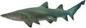
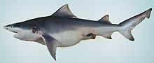
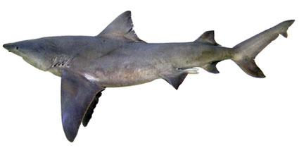
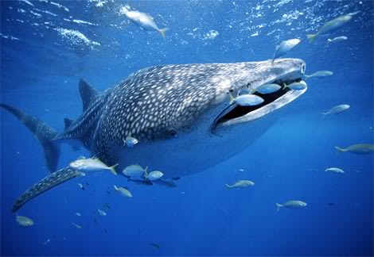

Shark and Ray facts
Sharks
A whaleshark (Rhincodon typus)
About 350 species of sharks occur worldwide. Sharks are primarily oceanic and are widespread in tropical to temperate zones. Sharks vary greatly in size. The largest species, also the largest of all fishes, is the plankton eating giant the Whale Shark (Rhincodon typus). The largest measured specimen was 12.65 m long and weighed 21.5 tonnes, but the Whale Shark probably attains 18 metres. Some of the deepwater shark species attain only about 25cm. Source: Department of Water Heritage and the Arts
Stingrays
The stingrays are a family—Dasyatidae—of rays, cartilaginous fishes related to sharks. They are common in coastal tropical and subtropical marine waters throughout the world, but the family also includes species found in warmer temperate oceans such as Dasyatis thetidis, and species entirely restricted to fresh water such as D. laosensis and Himantura chaophraya. With the exception of Pteroplatytrygon violacea, all dasyatids are demersal.
They are named after the barbed stinger (actually a modified dermal denticle) on their tail, which is used exclusively in self-defense. The stinger may reach a length of approximately 35 cm, and its underside has two grooves with venom glands. The stinger is covered with a thin layer of skin, the integumentary sheath, in which the venom is concentrated. Some species have several stingers, and a few, notably Urogymnus asperrimus, lack a sting entirely.
Other types of rays also referred to as stingrays are the river stingrays (family Potamotrygonidae), the round stingrays (families Urolophidae and Urotrygonidae), the sixgill stingray (family Hexatrygonidae), and the deepwater stingray (family Plesiobatidae). For clarity, the members of the family Dasyatidae are sometimes called whip-tail stingrays.
While most dasyatids are relatively widespread and not currently threatened, there are several species (for example Taeniura meyeni, D. colarensis, D. garouaensis, and D. laosensis) where the conservation status is more problematic, leading to them being listed as vulnerable or endangered by IUCN. The status of several other species are poorly known. Source: Wikipedia
Feeding
Most sharks are predators. Many sharks species become active after dusk and hunt during the night. The majority of sharks feed on other fishes. Large sharks, such as the Great White Shark (Carcharodon carcharias) and Tiger Shark (Galeocerdo cuvier), prey on large marine mammals such as seals, sea-lions, dolphins as well as large fishes, turtles and even sea birds.
The Great White Shark (Carchardon carcharias)
While some sharks are probably not very selective feeders, certain sharks eat some foods more than others. For example, hammerhead sharks are known for eating stingrays; bull sharks eat other sharks; and smooth dogfish eat crabs and lobsters. Tiger sharks have been called “garbage cans of the sea” because they feed opportunistically on both live food and carrion. Prey includes bony fishes, other sharks, marine mammals, seabirds, and invertebrates. Many sharks prey most often on the weak, elderly members of a population. They select this because it is easier to catch.
Many species of sharks are adapted for bottom feeding. Bottom feeders use the upper jaw to help pick up prey items. One example of a bottom feeder, the Port Jackson shark, has two types of teeth. Front teeth are pointed for grasping and back teeth are flat and molarlike for crushing. Another mechanism some sharks use for collecting food is filter feeding. The basking shark (Cetorhinus maximus) and the megamouth shark (Megachasma pelagios)strain enormous quantities of plankton from the water on gill rakers. Whale sharks also filter feed, but instead of using gill rakers, they strain plankton through a spongy tissue supported by cartilaginous rods between the gill arches. Filter feeders have reduced, nonfunctional teeth.
Source: Department of Water Heritage and the Arts
Breeding
Mating in sharks is facilitated by the clasper organs of males, which are inserted into the female’s cloaca during courtship. Fertilisation is always internal, and reproduction occurs in one of three modes:
- Laying eggs (oviparous)
- Live bearing (viviparous)
- Young hatching from eggs within the mother (ovoviviparous)
Examples of all three reproduction methods are found in sharks living in Australian waters. The Port Jackson Shark (Heterodontus portusjacksoni) lays spiral shaped eggs that young hatch from (oviparous), the Smooth Hammerhead Shark (Hphyrna zygaena) gives birth to live young (viviparous) and the Grey Nurse Shark (Carcharias taurus) gives birth to pups after they have hatched from eggs within the uterus (ovoviviparous). Source: Department of Water Heritage and the Arts
Age
Little is known about the growth and age of Sharks. Many of the conventional methods for aging animals, such as examining teeth, will not work with Sharks. Sharks grow slowly compared to bony fishes, possibly due to sharks’ slow digestive time and feeding rates. There is considerable variation in age and growth rates between species, and even between populations of the same species. Growth rings are periodically deposited on the vertebrae of some sharks. Vertebrae can be stained and examined for these growth rings. Growth rings may, however, stop developing in older sharks. Examining the vertebrae of captive-born sharks after their death enables researchers to compare the number of growth rings with the shark’s known age. In some areas tagged sharks are providing information about growth rates. Once a shark is caught, it is measured, tagged, and released. The shark is measured again when it is recaptured. Researchers correlate the measurements with the number of years since capture and calculate a yearly growth rate. Source: Department of Water Heritage and the Arts
Protection
In Australia, species are listed as threatened species under the Environmental Protection and Biodiversity Conservation Act 1999.
Critically Endangered species
- Grey Nurse Shark (Carcharias taurus) - East Coast population
 - Speartooth Shark (Glyphis sp. A)

Endangered species
- Northern River Shark (Glyphis sp. C)

Vulnerable species
- Grey Nurse Shark (Carcharias taurus) - West Coast population
- Whale Shark (Rhincodon typhus)
 - Great White Shark (Carcharodon carcharius)